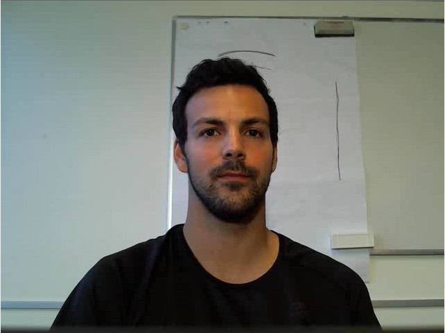
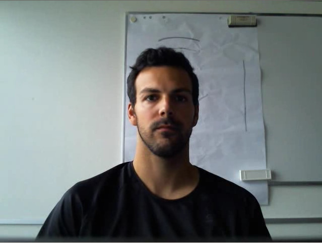

Remote Photoplethysmography
Posted on Tue 20 November 2018 in research
 
Pictures of one of the subjects in the new COHFACE_ video dataset. On the left, the subject face is well-lit, without shadowed areas. On the right, the subject's face is exposed to natural lighting (from the side). Results vary substantially while reconstructing the PPG signal from each of these cases.
Reproducibility Checklist
- All datasets used in this study are public
- A new public dataset was released (COHFACE Database), DOI: 10.34777/ff3f-ba56
- Software is open-source, extensible and tested on a regular basis
- Complete documentation is available
We address the problem of reproducible research in remote photo-plethysmography (rPPG). Most of the work published in this domain is assessed on privately-owned databases, making it difficult to evaluate proposed algorithms in a standard and principled manner. In our contribution Heusch et al. (2017), three state-of-the-art rPPG algorithms were selected and evaluated. For this purpose, a new, publicly available database containing 40 subjects (named COHFACE Database) captured under two different illumination conditions has been introduced. A thorough experimental evaluation of the selected approaches has been conducted using different datasets and their associated protocols. Our reproducible research framework allows assessing performance in a principled and unbiased way. Obtained results show that only one rPPG algorithm has a stable behaviour, but overall it has been noticed that performance is highly dependent on a careful optimization of parameters. Conducted experiments also shows that generalization across conditions (i.e. resolution, illumination) should be of high concern when assessing rPPG approaches. The data, the experimental protocols and the implementation of the algorithms
Bibliography
Guillaume Heusch, André Anjos, and Sébastien Marcel. A reproducible study on remote heart rate measurement. September 2017. URL: https://arxiv.org/abs/1709.00962, arXiv:1709.00962. ↩